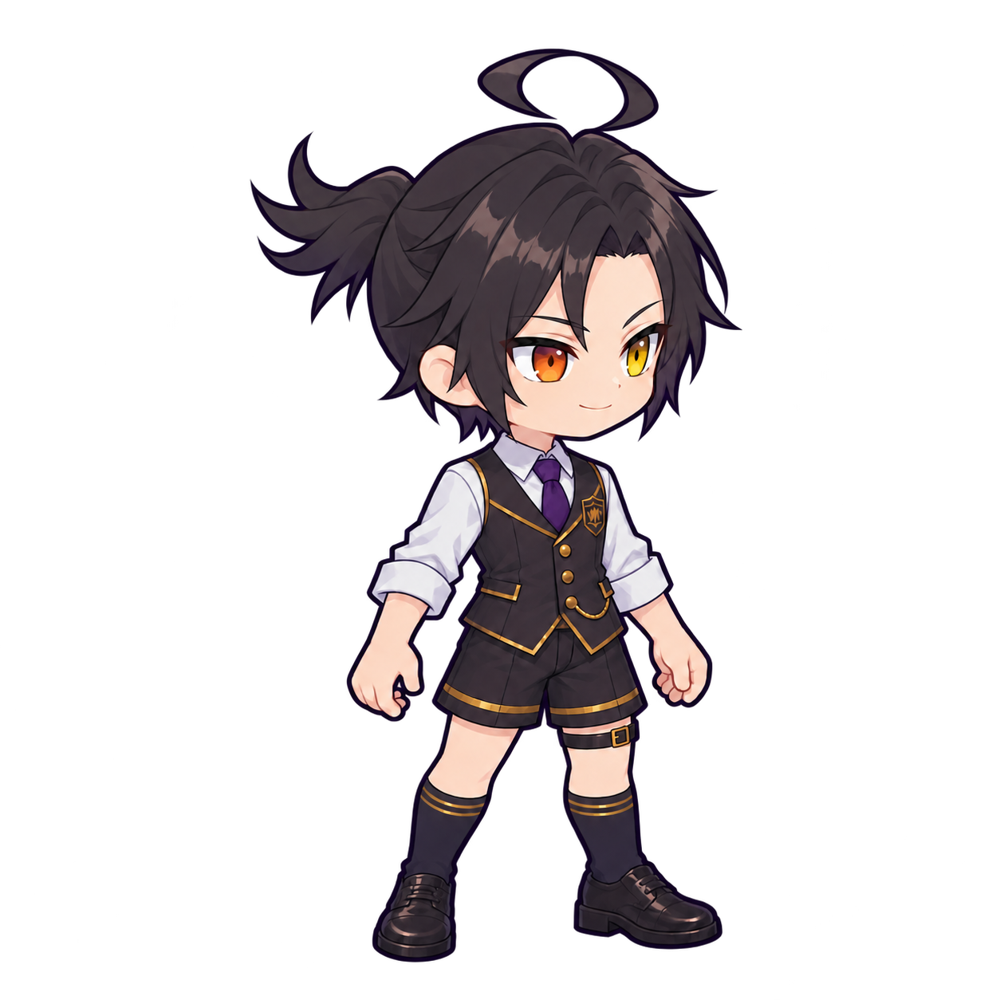
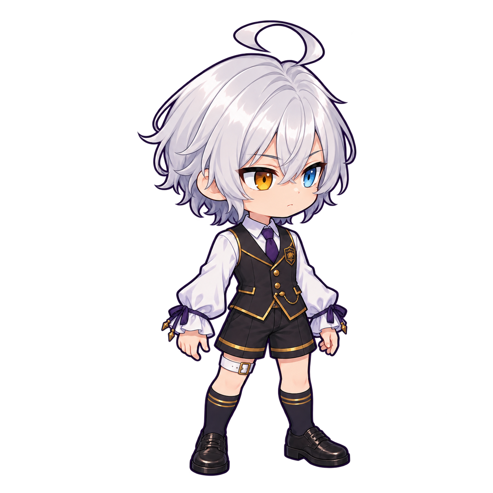
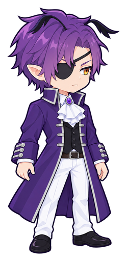

SD BATTLE / BODY TEMPLATE STUDY
元の頭で、衣装を比べる。
使い方: ① キャラ・兵種・衣装を選ぶ → ② 頭と色を合わせる → ③ 記録する → ④ 記録した見た目を呼び出す。JSONの保存・読込は、いちばん下の別の欄です。
いま表示している見た目
読み込み中
REFERENCE FIT / アルシェ
戦列下級・子供 A1 / 半袖・前面腰布
素材を読み込んでいます
アルシェ / 合成＋元SD元SDそのまま / 同じ全高基準
選んだ衣装・頭合わせ・配色が、ここにそのまま出ます。薄く重なっているのが元SD（頭・肩・腰・足元の比較用）。重ね方は STEP 2 の「表示の補助」で変えられます。
3案を並べて見る（比べたいときだけ）
衣装と元頭部を読み込んでいます
A1 / 半袖A2 / 肘丈A3 / 長袖
身体の表示倍率・足元は3案で共通。選んでいる案は太字です。案を変えるのは STEP 1 のボタンです。
2人を同じ衣装で比較
アルシェカリマギュンター
70 PX / 読みやすさ
頭を含む全身で約70px
ここでは静止構えだけ。 武器の差し替え・頭の追従・前後の重なりを含む攻撃モーションは、まだ検証していません。
REFERENCE / 元の姿
衣装3案には元SDの頭部を使用。身体・頭部・元SDは変更なしのコピーです。
以前の身体試作だけ旧生成頭を残しています。配色・衣装の採用はまだ決定していません。


